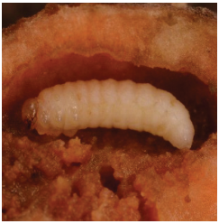
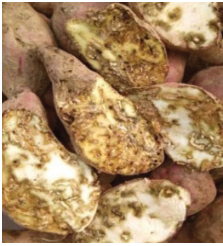

Pest management
Various pest species can infect and compromise sweet potato plant growth and
productivity. Sweet potato diseases may be caused by three general groups of
pathogens: fungi, nematodes, and viruses, while bacterial diseases are minor.
Weeds, insects, and vermin are the most common pests that affect sweet potatoes.
The management of these pests is discussed here.
Weed management
It is advisable to keep the area weed-free, especially in the early stages of growth.
Weeding frequencies range from 1-3 times. The first weeding is done between
1-2 months after planting. During this time, hand weeding or shallow cultivation
is recommended to avoid damaging roots. Weeds can also be suppressed in sweet
potato farms by mulching (using organic mulch, e.g., straw, grass, and clippings).
Management of other pests and disease
Various soil insects, including sweet potato weevils, rootworms, wireworms,
white grubs, fringed beetles, and flea beetles, can damage the sweet potato root.
Only the sweet potato weevil larvae tunnel throughout the root, while other soil
insects feed on the surface of the developing root.
(a)The sweet potato weevil: The sweet potato weevil (Cylas formicarius) is a
tiny insect, about 6-8 mm long, with a distinctively elongated body and a dark
metallic blue or black colour (Figure 4.4 (a))

Figure 4.4 (a): Adult sweet
potato weevil

Figure: 4.4 (b): Larva of
sweet potato weevil

Figure 4.4 (c): Damaged
sweet potato tubers
Source: https://ucnfanews.ucanr.edu/Articles/Insect_Hot_Topics/http___ucnfanews.ucanr.
edu_Articles_Insect_Hot_Topics_INSECT_HOT_TOPICS__Sweet_potato_and_
rough_sweet_potato_weevils/